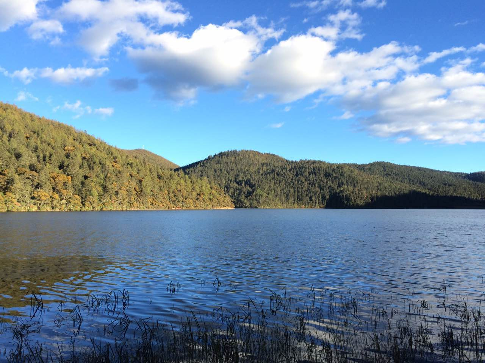

<ion-view view-title="我的"> 
	<ion-content>
		
		
		
		<ion-list>
	      <ion-item href="#/find"><a class=" item-icon-left item-icon-right" ><i class="icon ion-edit"></i>边走边记<i class="icon ion-ios-arrow-thin-right"></i></a></ion-item>
	      <ion-item><a class=" item-icon-left item-icon-right" href="#/jinhai"><i class="icon ion-navigate"></i>去玩吧<i class="icon ion-ios-arrow-thin-right"></i></a></ion-item>
	      <ion-item><a class=" item-icon-left item-icon-right" href="#/find/1"><i class="icon ion-location"></i>附近<i class="icon ion-ios-arrow-thin-right"></i></a></ion-item>
	      <ion-item><a class=" item-icon-left item-icon-right" href="#/setting"><i class="icon ion-gear-a"></i>设置<i class="icon ion-ios-arrow-thin-right"></i></a></ion-item>
	    </ion-list>
	</ion-content>	
</ion-view>